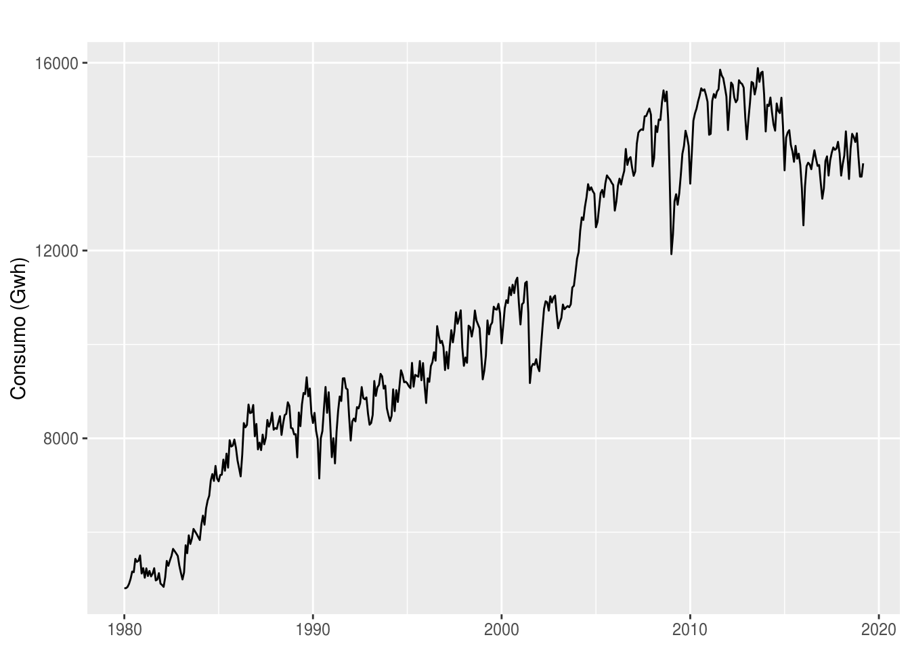
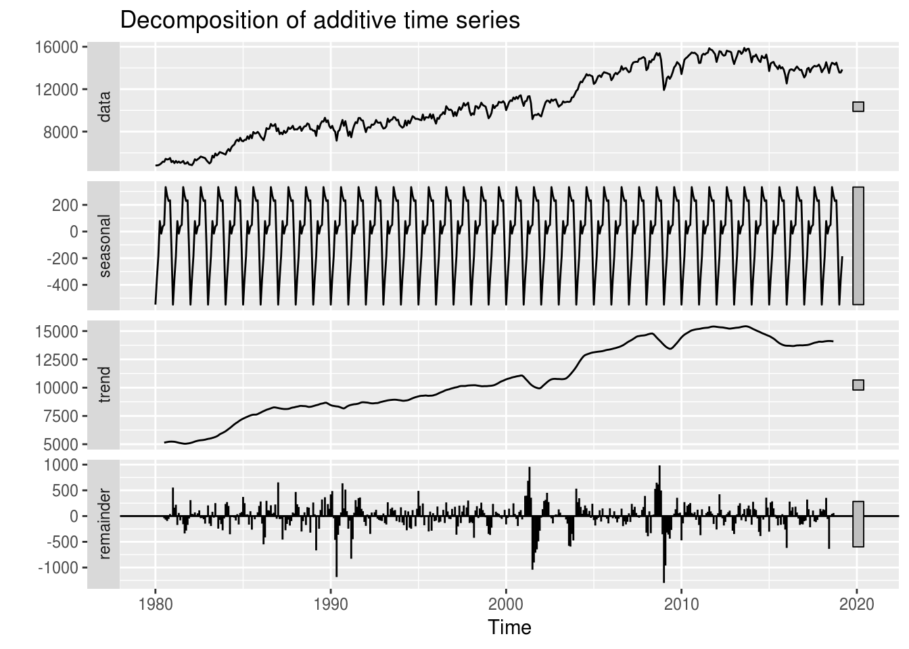
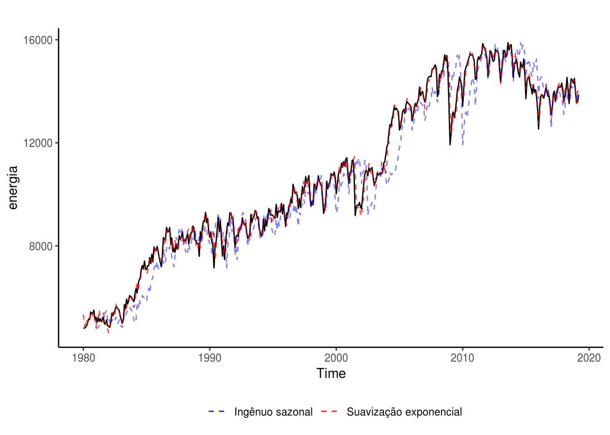
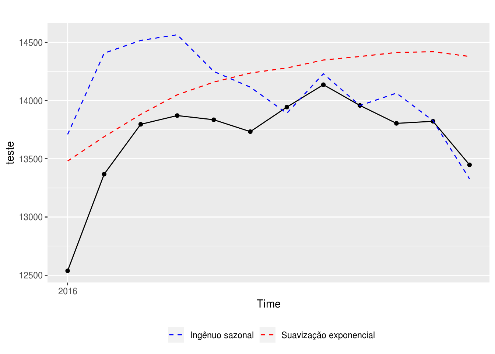

Capítulo 3 Avaliação de precisão de modelos de séries temporais
Suponha que \(y_i\) seja uma observação real de uma série temporal no período \(i\) e \(\hat{y}_i\) seja uma previsão de \(y_i\). O erro de previsão no ponto \(i\) é simplesmente \(e_i = y_i - \hat{y}_i\). Para calcular o erro “geral” de um modelo preditivo de série temporal, diversas existem diversas métricas.
Para demonstrar o uso dessas métricas, usaremos uma série temporal obtida pelo pacote BETS:
# carregar pacotes usados
# install.packages("BETS")
library(BETS)
library(forecast)
library(tidyverse)# baixar serie temporal de exemplo deste capitulo
BETSsearch("industria", periodicity = "M", view = FALSE) %>%
head(10) %>%
knitr::kable()##
## BETS-package: Found 139 out of 18706 time series.| code | description | unit | periodicity | start | last_value | source |
|---|---|---|---|---|---|---|
| 11073 | Industrial production (2002=100) - Northeast region | Index | M | 31/01/1991 | feb/2014 | IBGE |
| 11074 | Industrial production (1991=100) - Amazonas | Index | M | 31/01/1991 | feb/2014 | IBGE |
| 11075 | Industrial production (1991=100) - Pará | Index | M | 31/01/1991 | feb/2014 | IBGE |
| 11076 | Industrial production (1991=100) - Ceará - 11076 | Index | M | 31/01/1991 | feb/2014 | IBGE |
| 11077 | Industrial production (1991=100) - Pernambuco - 11077 | Index | M | 31/01/1991 | feb/2014 | IBGE |
| 11078 | Industrial production (2002=100) - Bahia | Index | M | 31/01/1991 | feb/2014 | IBGE |
| 11079 | Industrial production (2002=100) - Minas Gerais | Index | M | 31/01/1991 | feb/2014 | IBGE |
| 11080 | Industrial production (2002=100) - Espírito Santo | Index | M | 31/01/1991 | feb/2014 | IBGE |
| 11081 | Industrial production (2002=100) - Rio de Janeiro | Index | M | 31/01/1991 | feb/2014 | IBGE |
| 11082 | Industrial production (2002=100) - São Paulo | Index | M | 31/01/1991 | feb/2014 | IBGE |
A busca pela string “indústria” nos retorna alguns datasets sobre o tema. Usaremos a série de número 1404, que é sobre o consumo de energia elétrica no Brasil em GWh e de frequência mensal.
energia <- BETSget(1404)
# Salvar para uso posterior
saveRDS(energia, "data/ts_energia.Rda")
# plotando a serie para a conhecer
autoplot(energia) +
labs(x = NULL, y = "Consumo (Gwh)")
É possível perceber que a série apresenta uma tendência contínua de alta desde o início. As pequenas variações podem ser interpretadas como componenente sazonal, o que é mostrado no gráfico de decomposição:
# analisando os componentes:
energia %>% decompose() %>% autoplot
Pelo gráfico, temos que tanto o componente de tendência quanto o de sazonalidade são bem evidentes na série.
Voltando ao tema do capítulo. Para ilustrar o conceito das métricas tratadas, vamos nos utilizar de dois modelos de previsão: um complexo, de suavização exponencial, e outro simples, um sazonal ingênuo.
mod.rn <- ets(energia)
mod.ingenuo.saz <- snaive(energia, h = 12)
# plotando os dois ajustes junto à curva original
autoplot(energia) +
# plota modelo de Suavização exponencial
geom_line(aes(y = mod.rn$fitted, color = "Suavização exponencial"),
linetype = "dashed", alpha = 0.7) +
# plotar modelo sazonal ingenuo
geom_line(aes(y = mod.ingenuo.saz$fitted, color = "Ingênuo sazonal"),
linetype = "dashed", alpha = 0.5) +
# redefinir cores
scale_color_manual(name = NULL, values = c("blue", "red")) +
theme_classic() +
# posicionar legenda
theme(legend.position = "bottom")
Pelo gráfico, poderíamos concluir que o ajuste obtido com o modelo de Suavização exponencial é superior ao sazonal ingênuo, que costuma errar o nível da série temporal.
Contudo, para ter certeza disso, precisamos avaliar os modelos com alguma métrica de precisão (ou de erro).
3.1 Medidas de precisão
Podemos dividir as métricas de precisão em dois grupos: os baseados em escala e os baseados em percentuais.
3.1.1 Métricas baseadas em escala
Você deve ter observado que \(e_i\) possui a mesma escala da variável resposta \(y_i\). Isto é, se o objeto do modelo é prever o consumo de gasolina de um carro, dado em litros, então o erro de previsão também será dado em litros. As duas métricas de erro baseadas em escala são o MAE (erro médio absoluto) e o RMSE (raiz do erro quadrático médio), calculados como:
\(MAE = media(|e_i|)\)
\(RMSE = \sqrt(media(e_i^2))\)
Entre as duas métricas, a MAE é mais fácil e simples de explicar. Contudo, o output da RMSE representa o que vários algoritmos de previsão são escritos para minimizar. Ela pode ser compreendida como uma medida análoga ao desvio padrão do modelo.
3.1.2 Métricas baseadas em percentuais
Se o objetivo de uma análise é avaliar a qualidade de ajuste e a acurácia de diferentes modelos para uma mesma série, as métricas baseadas em escala não são um problema.
Porém, quando se deseja avaliar a performance de um (ou mais) modelo para diversas séries temporais de escalas diferentes (é muito incomum que um conjunto grande de séries possuam a mesma escala, mesmo que tenham a mesma unidade de medida), deve-se optar pelas métricas baseadas em percentuais.
Definindo \(p_i = 100\times e_i/y_i\), temos que a métrica mais comum é o MAPE (erro absoluto percentual médio):
\(MAPE = media(|p_i|)\)
Contudo, o MAPE possui uma grande desvantagem: é indefinido quando há pelo menos um caso em que \(y_i = 0\). Para contornar essa situação e poder usar uma métrica de erro independente de escala em uma série temporal que possa apresentar valores muito próximos ou iguais a zero, podemos usar o MASE (erro médio de escala absoluto), que é a proporção de erros de previsão em relação aos erros de uma previsão ingênuo.
A função forecast::accuracy() retorna todas essas métricas e mais algumas outras para um dado modelo preditivo:
# modelo de Suavização exponencial
accuracy(mod.rn)## ME RMSE MAE MPE MAPE MASE
## Training set 20.455 265.5196 197.8673 0.177949 2.042775 0.3594056
## ACF1
## Training set 0.0222034# modelo ingenuo sazonal
accuracy(mod.ingenuo.saz)## ME RMSE MAE MPE MAPE MASE ACF1
## Training set 234.2484 730.5153 550.5403 2.392288 5.322205 1 0.88952643.2 Desempenho fora de amostra: Overfitting e underfitting
Conforme discutido no capítulo anterior, a melhor maneira de avaliar o desempenho preditivo de um modelo de séries temporais é avaliar sua performance em dados nunca vistos pelo modelo. Repetimos o procedimento já descrito nos dois modelos usados como exemplo:
# vamos construir dois modelos para serem comparados: um de Suavização exponencial e
# um modelo ingenuo
treino <- window(energia, end = c(2015, 12))
teste <- window(energia, start = c(2016, 1), end = c(2016, 12))
# vamos "esconder" o conjunto de teste dos modelos:
mod.rn <- nnetar(treino) %>% forecast(h = length(teste))
mod.ingenuo.saz <- snaive(treino, h = 12) %>% forecast(h = length(teste))
# a funcao accuracy aceita como argumento um vetor numerico de teste, sobre o qual
# a acuracia do modelo sera avaliada
accuracy(mod.rn, teste) %>% round(3)## ME RMSE MAE MPE MAPE MASE ACF1 Theil's U
## Training set -0.224 324.163 242.01 -0.110 2.432 0.422 0.104 NA
## Test set -454.840 525.610 454.84 -3.366 3.366 0.794 0.279 1.356accuracy(mod.ingenuo.saz, teste) %>% round(3)## ME RMSE MAE MPE MAPE MASE ACF1 Theil's U
## Training set 255.648 753.274 572.810 2.616 5.606 1.000 0.887 NA
## Test set -383.750 567.367 412.917 -2.868 3.082 0.721 0.656 1.443Os resultados são no mínimo interessantes: enquanto o desempenho do modelo de Suavização exponencial é bem melhor na série de treino (possui MAE e MAPE mais de duas vezes menor), é o modelo sazonal ingênuo que apresenta o melhor desempenho na série de teste, com exceção do RMSE.
Esse é um exemplo claro que ilustra os conceitos de overfitting e underfitting, também conhecido como o tradeoff entre viés e variância.
Conceitualmente, viés é o erro que ocorre quando o algoritmo do modelo preditivo assume pressupostos errados (ou demasiadamente simples). Um alto viés implica na possibilidade de que o modelo não incorpore elementos importantes do conjunto de treino, causando o underfitting.
Variância é o erro oriundo de pequenas variações no conjunto de treino. Quando um modelo é complexo demais a ponto de tentar representar todas as pequenas variações observadas no conjunto de treino, temos o overfitting.
Nos nossos dois modelos de estudo, apenas analisando os resultados de acurácia nos conjuntos de treino e teste, podemos observar que o modelo de Suavização exponencial sofre de overfitting, pois apresenta um excelente desempenho na série de treino mas um desempenho inferior na série de teste comparado com um modelo simples, que compreensivelmente sofre de underfitting.
Essa representação visual nos ajuda a entender esses dois conceitos:

Também é possível analisar a qualidade das previsões dos modelos graficamente:
# plotando as previsoes contra o real:
autoplot(teste) +
geom_point() +
geom_line(aes(y = mod.rn$mean, color = "Suavização exponencial"),
linetype = "dashed") +
geom_line(aes(y = mod.ingenuo.saz$mean, color = "Ingênuo sazonal"),
linetype = "dashed") +
scale_color_manual(name = NULL, values = c("blue", "red")) +
theme(legend.position = "bottom") 
Dá para observar que o modelo ingênuo sazonal apresenta um desempenho praticamente perfeito no segundo semestre de 2016, compensando o erro alto no primeiro semestre. Será que isso é um padrão? É mais fácil prever o segundo semestre do que o primeiro? Será que, caso o modelo ingênuo sazonal seja sempre melhor no segundo semestre e o de Suavização exponencial no primeiro, é possível construir um modelo de previsão misto (ou um ensemble model) que se beneficie dessa informação? Fica o exercício para o leitor.
3.3 Referências
- Ótimo post no blog do Regis sobre o tradeoff entre viés e variância;
- ANOTHER LOOK AT FORECAST-ACCURACY METRICS FOR INTERMITTENT DEMAND, um paper do Rob Hyndman sobre as principais métricas de erros usadas em séries temporais.
Exercícios:
- Baixe uma série temporal usando o BETS (pode ser a mesma do capítulo 01) e ajuste três modelos nela: ARIMA, Suavizacao exponencial e Media simples.
- Calcule a acurácia dentro e fora da amostra.